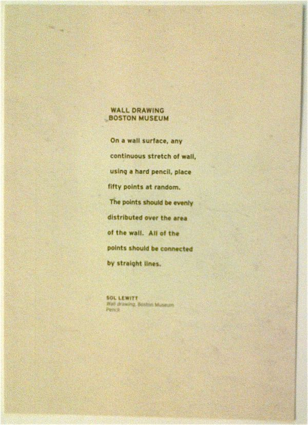
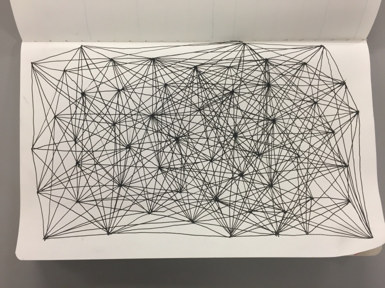

My digital explorations with P5.js
Users can "draw" within the sketch box by using a circle. The circle generates at a certain speed so the space between previous circle to the next depends on the speed of user's cursor movement. In this sketch users have major control on how the sketch box would look like.
Users draw on the sketch box with a triangle that is anchored to the center of the page, creating radial design with various sizes and angled of triangles. The control still very much held by the user but limited by the code's limitation to keep the anchor in the middle of the sketch box.
Generates multiple random lines at random length radiating from user's cursor. It piles up at the last place the cursor was on when user moves outside of the sketch box. User still has a lot of control on the of the sketch box as a whole but the code leads the mark making on the page.
Users draw on the sketch box with sound, the higher the input volume, the higher on the page the dots are going. The dots will keep going regardless if it detects any sound or not. It bounces from left to right and back right to left on loop. Users have less control on the drawing compared to previous sketches.
I wanted to be able to make drawings based on another drawing. Featuring Kermit the frog. I wanted to explore this further to make a sticker book game, unfortunately was short of time to code for fun. Maybe I'll revisit it some time soon.
I wanted to make the front page of my website interactive so I experimented on ways to achieve that. If you hover over your cursor on any of the bubbles, you can separate them from each other. However, after coding and testing this, it takes a lot of computer processing power as the number of the bubbles keep adding up. If one leaves their computer on this front page, the screen will eventually become over crowded and will slow down the computer. Besides, the bubbles didn't have significant meaning. I ended up scrapping the idea and went for a different approach of interactivity.
The sketch above is the early prototype for the bubbles used on the website front page idea that I scrapped. The bubbles, or the "cells", multiple everytime two or more cells are in close proximity and connected by a line. It multiplies one extra cells for every second the cells are within close proximity to one another. It was inspired by Sol Lewitt's drawing rules #118, which I also explored through a couple of digital sketches below:
The following sketches below are inspired by Sol Lewitt's drawing rules, which is:
I did my version on a piece of paper,
Then later explored through P5.js. In the digital version I used less points to save the processing power to load all 50 points. On the first drawing, the code generates 25 random points across the sketch box. It will generate a new one on click anywhere on the page.
After the first one, I keep challenging myself by adding new rules to the original set of rules. This time I decided to start the page empty and adds point randomly on the page on click. Everytime a new point pops up, it automatically creates new lines that connect it to other points on page.
For the next one, I want all the points to travel across the sketch box. It refreshes with new sets of points on click.
On the next sketch, user have more control as to where they want to put the points. It adds a new point on click based on the placement of the cursor. Users are also able to click and drag (admittedly with effort, due to how small the points are) on pre-existing points wherever they want.
After experimenting with many ways to follow Sol Lewitt's drawing rules on P5.js, I combined some of them together and add various effects to aesthetically add to the drawing.
Then I experimented some more with colors and gradients.
So this is the final outcome of my Sol Lewitt drawing rules study.